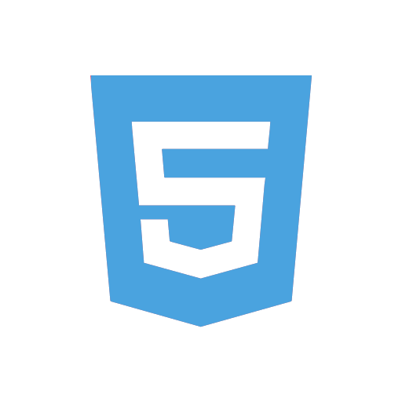
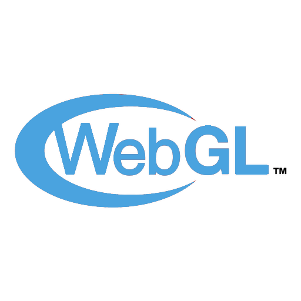
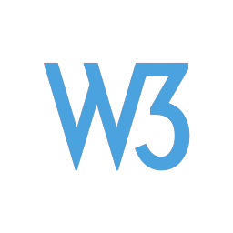
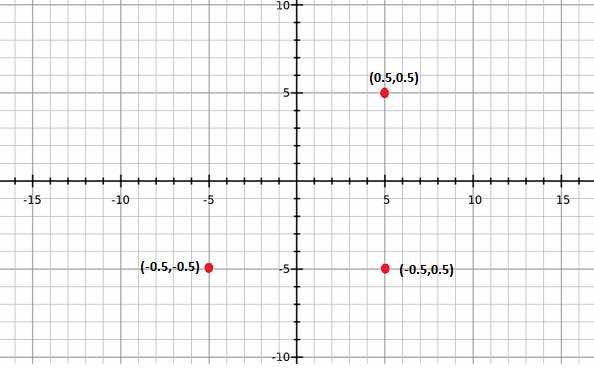
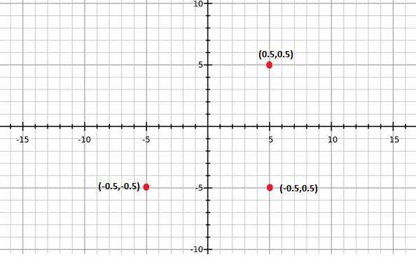
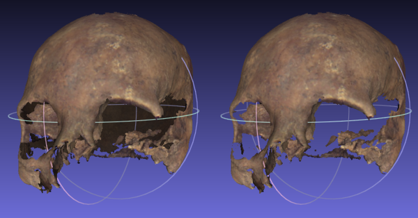

بخش ١ : مقدمه
بخش ۲ : WebGL چیست ؟
بخش ۳ : Shader Programs
بخش ۴ : Graphics Pipeline
بخش ۵ : WebGL در عمل
بخش ۲ : WebGL چیست ؟
بخش ۳ : Shader Programs
بخش ۴ : Graphics Pipeline
بخش ۵ : WebGL در عمل
بخش ١
مقدمه
- وب سنتی دست خوش تغییرات فراوانی شده است.
- مرورگرها به سرعت در حال تحول هستند.
- مرورگرها به پلتفرمهای پیشرفتهای تبدیل شدهاند.


بخش ۲
WebGL چیست ؟


سیستم مختصات
- حجم دید محدود به (1, 1, 1) و (-1, -1, - 1)
- Vertices
- Indices
 

Mesh

بخش ۳
Shader Programs
بخش ۴
Graphics Pipeline
Graphics Pipeline



توضیحات بخش های مختلف Graphics Pipeline
- 4 - Fragment Shader
- 5 - Frame Buffer

بخش ۵
WebGL در عمل
از توجه شما سپاس گزاریم